RAIL
Rethinking Auditory Intelligence in Large Audio-Language Models
with a CHC-grounded benchmark
1The University of Melbourne 2Alexandru Ioan Cuza University of Iași 3The University of Hong Kong 4Wuhan University 5The University of Auckland 6Monash University
*Equal contribution · †Corresponding author
From task scores to auditory cognition
Humans process rich auditory environments through various cognitive capabilities such as audio perception, audio reasoning and memory. Despite recent progress in large audio-language models (LALMs), current evaluation remains largely task- or domain-centric, focusing on end performance while ignoring underlying auditory cognitive behaviors. This gap between how auditory cognition is understood in humans and how it is evaluated in LALMs hinders the interpretation of model behaviour in underlying capabilities and limits alignment with human auditory objectives.
We introduce RAIL, a human-centric benchmark grounded in the Cattell–Horn–Carroll (CHC) framework, which formalises auditory cognition into five core capabilities, and develops them into structured evaluation tasks with principled data curation and human-aligned evaluation protocols. Evaluating 26 LALMs reveals strong performance in knowledge-related tasks but weak auditory perception and memory, reflecting reliance on language-based pretraining. Limited reasoning under auditory settings further suggests a mismatch between existing training paradigms and human-like auditory reasoning, as well as over-reasoning at the cost of efficiency. Six LALMs exceed human performance in general, while auditory processing all lags behind human. Overall, RAIL establishes a new framework for human-aligned evaluation of auditory intelligence.
What RAIL reveals about today's audio models
Imagine a busy café: cups clatter, conversations overlap, music plays in the background. A human listener separates speech from noise, works out who is talking to whom, and recognizes a colleague's voice from an earlier meeting. RAIL asks whether LALMs can do the same, one capability at a time. Six findings stand out.
Knowledge is inherited; perception is not
Knowledge (56.21) and Memory (55.05) have the highest mean scores across 26 models. Auditory Processing is the lowest (43.83).
Language cues mask weak listening
Language-supported auditory tasks reach medians of 0.56–0.74. Perceptual-only tasks drop to 0.31–0.42, and sound localization to 0.28. The gap holds in 18 of 26 models.
Sequential reasoning is the weakest link
When models must apply sound-triggered rules step by step and track an evolving state, most open-source models score below 50%.
Speech memory is not sound memory
The best models reach 100 on speech memory span. On memory for non-speech sound patterns, no model exceeds 60.
Bigger is not more efficient
Across 21 open-source models, size does not predict B-AUC. Models of 8.4–8.6B parameters range from 0.2 to 0.7.
Humans still hear better
Six LALMs beat the human baseline overall, so humans rank 7th. No model matches humans on auditory processing or processing efficiency.
Five capabilities, 32 subcapabilities
CHC theory is a psychometric taxonomy of human cognitive abilities, derived from more than 70 years of factor-analytic studies and validated across populations and assessment batteries. It is hierarchical: broad abilities split into narrow abilities that can each be measured. RAIL restricts CHC to the auditory channel and turns every narrow ability into an audio task.
With cognitive experts, we compared CHC against Bloom's taxonomy, which describes educational task difficulty rather than latent cognitive structure, and Gardner's multiple intelligences, which lacks standardized measurement and empirical validation. CHC was the only data-driven, measurable option.
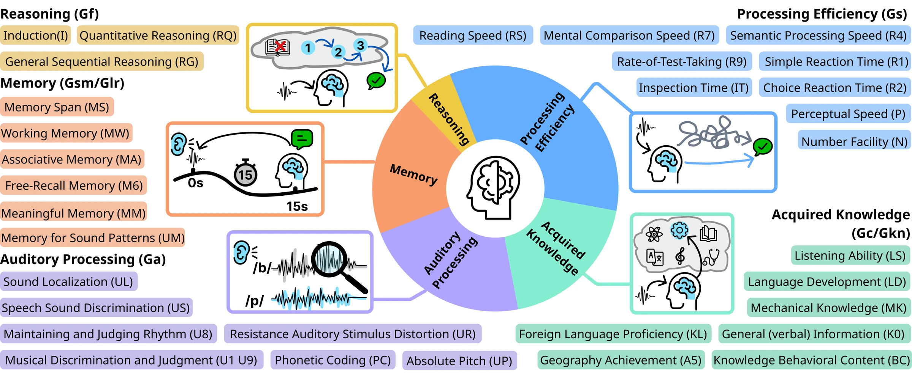
Leaderboard: uneven capability profiles across 26 LALMs
Table 1. Scores (%) across the five CHC capabilities. Click a column to sort. Bold and underline mark the best and second-best model among the rows shown. Mean is the unweighted average of the five columns; under LLM-as-Judge it gives the paper's open- and closed-source averages of 46.27 and 65.10. Under the strict setting, the efficiency column is B-AUC.
Evaluation protocol
26 models, four lines
21 open-source models from 167M to 33.5B parameters and 5 closed-source APIs, covering speech-centered LLMs, general audio-language models, omni multimodal models and closed-source APIs.
Two accuracy metrics
Strict ACC counts a response as correct only when every token of the final answer matches the ground truth. LLM-as-Judge (GPT-5.4) scores semantic equivalence with the ground truth.
Efficiency by B-AUC
Efficiency uses reasoning tokens per response as a proxy for computational effort. B-AUC rewards models that reach correct answers within short reasoning budgets. Latency is not used because it depends on serving infrastructure.
Capability distributions and correlations
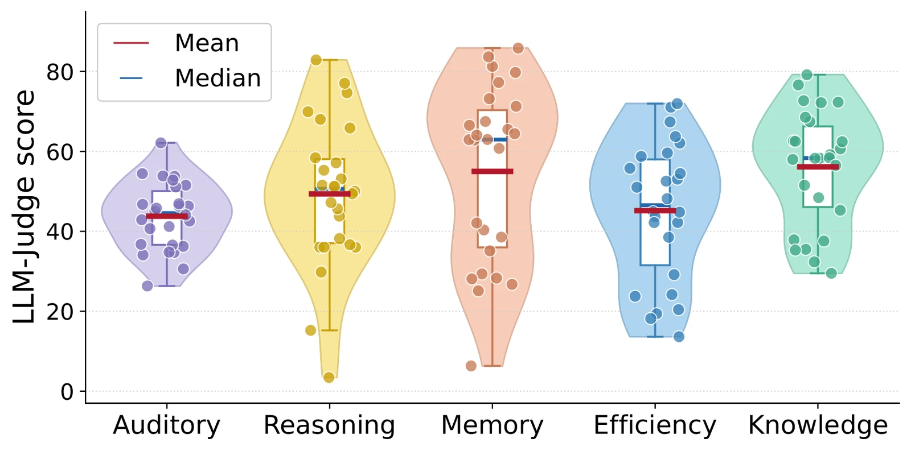
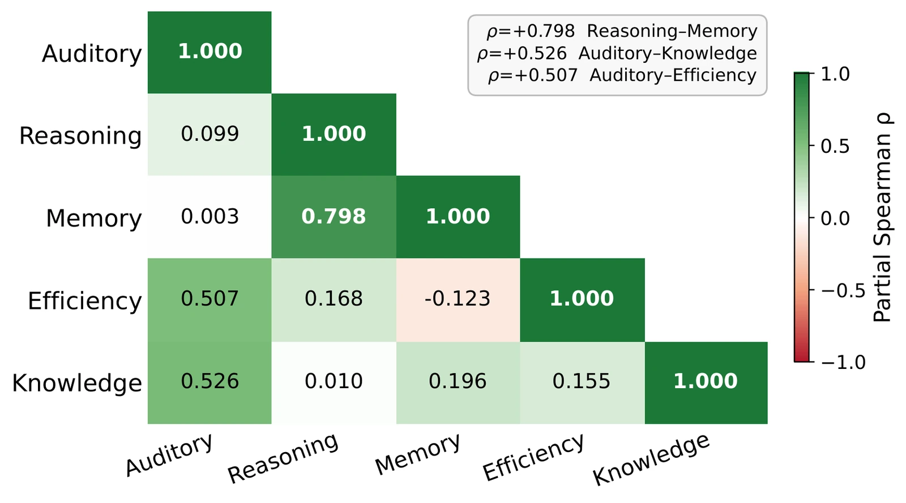
Knowledge is largely inherited from the text-based LLM, whose pretraining supplies strong semantic priors. Auditory processing needs fine-grained reasoning over frequency structure, spatial cues and temporal dynamics, which current audio encoders learn only weakly.
Reasoning and memory correlate most strongly (ρ = 0.798), which suggests shared reliance on multi-step inference. Auditory processing correlates moderately with efficiency (ρ = 0.507) and knowledge (ρ = 0.526): once audio is encoded correctly, models tend to produce shorter reasoning traces, and better auditory grounding also helps them reach stored knowledge through the audio pathway.
A four-stage, human-in-the-loop curation pipeline
Computer scientists and cognitive experts built RAIL together, with LALMs assisting in data generation. Every stage feeds back into task formulation until both groups agree on ability definitions, task design and sample quality.
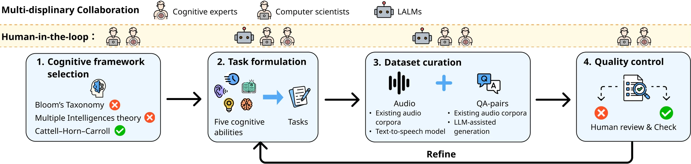
Framework selection
Compare Bloom's taxonomy, multiple intelligences and CHC. Adopt CHC for its measurable, hierarchical structure.
Task formulation
Translate each CHC ability into auditory tasks under two principles: auditory dependence and capability independence.
Dataset curation
Select audio from existing corpora or synthesize it with TTS when no source fits. Build QA pairs from templates, rule-based pipelines or LLM-assisted generation, then verify by hand.
Quality control
Cognitive experts check that each item targets the intended ability, is answerable from audio, and has an unambiguous answer. Refine until consensus.
Two design principles
Auditory dependence
Every task is centered on audio cues. Memory tasks, for example, rely on spoken cues in past dialogue, so they measure acoustic memory rather than text recall.
Capability independence
No target ability depends on another as a prerequisite for being measured. Each of the five capabilities is assessed on its own.
Data statistics
RAIL contains 5,306 samples across 32 tasks and 30.6 hours of audio, and 68.1% of the samples are newly constructed. Processing-efficiency items are short (mean 4.02 s, median 1.81 s) to match rapid-response evaluation, while memory and reasoning items are much longer (means of 46.65 s and 39.04 s) because they need extended auditory context.
| Capability | # Samples | Total dur. (h) | Mean dur. (s) | Median dur. (s) | # New / All | # Tasks |
|---|---|---|---|---|---|---|
| Ga Auditory Processing | 1,170 | 4.93 | 15.17 | 4.00 | 701 / 1,170 | 7 |
| Gf Reasoning | 322 | 5.19 | 39.04 | 25.04 | 222 / 322 | 3 |
| Gsm/Glr Memory | 1,000 | 13.0 | 46.65 | 28.64 | 900 / 1,000 | 6 |
| Gs Processing Efficiency | 1,800 | 2.01 | 4.02 | 1.81 | 1,800 / 1,800 | 9 |
| Gc/Gkn Knowledge | 1,014 | 7.2 | 25.48 | 10.49 | 141 / 1,014 | 7 |
| Overall | 5,306 | 30.6 | 20.74 | 7.70 | 3,614 / 5,306 | 32 |
Table 2. Data statistics of RAIL. A 640-item human-evaluation subset (20 items per subcapability) was also answered by 24 participants.
What existing benchmarks miss
Existing audio benchmarks organize evaluation by task or audio domain. None is grounded in a cognitive theory with full coverage, and audio memory and processing efficiency are absent from all of them.
| Benchmark | Theory-grounded | Domains | Reasoning | Memory | Auditory | Knowledge | Efficiency |
|---|
✓ full systematic coverage · ◐ partial or non-systematic coverage · ✗ not covered. Domains: S = Speech, So = Sound, M = Music.
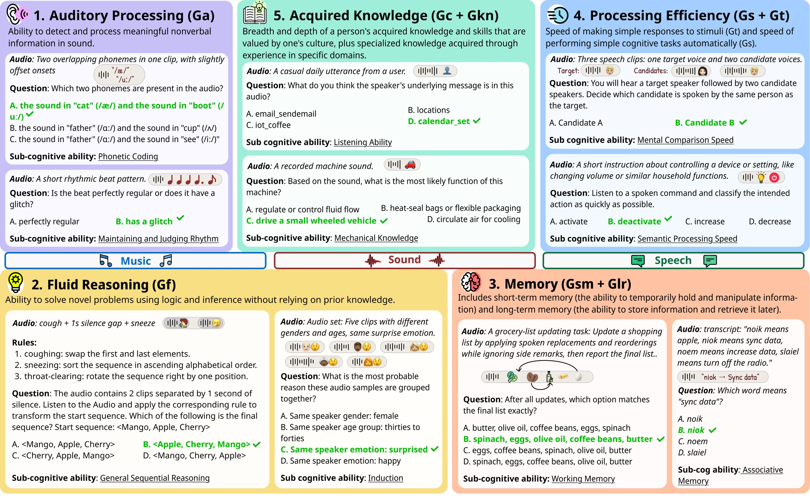
Where humans still lead
24 participants with normal hearing answered a 640-item subset (20 items per subcapability). Each item received 2–5 independent responses, and each clip could be played only once. Models were scored on the same items with the same aggregation.
Pick up to five models to compare with the human profile (LLM-as-Judge, %, human-evaluation subset).
Human rank against the 26 LALMs on each capability. The bar shows the best model's score; the white tick marks the human score.
Humans score highest on auditory processing and processing efficiency. Models struggle to perceive nonverbal acoustic cues and subtle sound variations, and many high-accuracy models generate unnecessarily long reasoning for simple inputs, while humans answer accurately with compact reasoning.
On memory and reasoning, humans rank 13th and 18th. Top models such as Gemini 3.1 Pro likely benefit from reasoning-oriented post-training and transformer context aggregation, which support associative retrieval over long sequences and step-by-step inference. Human memory is more structured but capacity-limited, which constrains retrieval and multi-step reasoning.
Show all 26 models on the human-evaluation subset
| # | Model | Auditory | Reasoning | Memory | Efficiency | Knowledge | Overall |
|---|
What each capability tells us
Auditory Processing
Models do far better when language can help
Speech Sound Discrimination (US), Resistance to Auditory Stimulus Distortion (UR) and Musical Discrimination (U1/U9) let models lean on words and language knowledge. Their medians are 0.56–0.74, up to 0.95 for frontier models. Phonetic Coding (PC), Absolute Pitch (UP) and Rhythm (U8) need direct perception of phonemes, tones and temporal structure, and fall to 0.31–0.42. Sound Localization is lowest (median 0.28, max 0.46). The pattern holds for 18 of 26 models.
Audio encoder design drives sensory performance
Step-Audio-2-mini leads Phonetic Coding; its Whisper-based encoder, pretrained on large-scale multilingual ASR, may preserve fine phonemic detail. DIFFA-2 leads Absolute Pitch with a Q-Former adapter over intermediate Whisper layers. Gemini 3.1 Pro is best on Rhythm and Sound Localization.
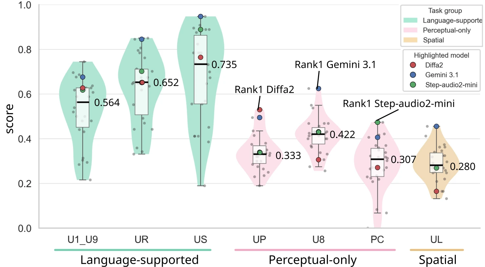
Fluid Reasoning
General sequential reasoning is the weakest
Sequential reasoning trails induction and quantitative reasoning for most open-source models, most of which score below 50%. Models must apply sound-encoded operations in order (for example, "sniff" = reverse, "cough" = duplicate, "throat clearing" = delete) while updating an intermediate state. Chain-of-thought post-training produces plausible intermediate text rather than explicit state updates, whereas humans maintain and propagate an evolving state step by step.
Reasoning post-training does not transfer to audio by itself
Step Audio R1 and Qwen3-Omni-30B do well on quantitative reasoning, partly thanks to math-related post-training of their language backbones. Audio Flamingo 3 and Omni R1, whose backbones had similar post-training, score noticeably lower. What matters is whether reasoning transfers to settings where numerical relations must be inferred from audio.
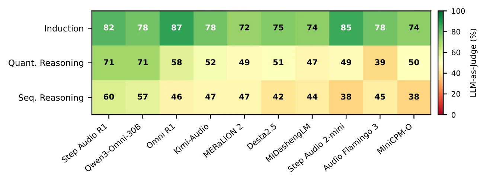
Memory
Non-speech memory is the weakest
Memory for Sound Patterns (UM) tests retention of environmental sounds and prosody. No model exceeds 60; the best is Gemini 3.1 Pro at 59. Speech-based Memory Span (MS) is far stronger: Gemini 2.5 Flash and Gemini 3.1 Pro reach 100, and several open-source models exceed 70.
Free recall splits into two regimes
Models hear a continuous dialogue with a short burst of unrelated target words and must recall only those words. Six models, including Gemini 3.1 Pro and Step Audio R1, score above 87 (up to 97.1), while six others, such as Mellow and Gemma-3n-E4B-it, score far below 10. Models optimized for long-form audio do better than those trained on short utterances or captions.
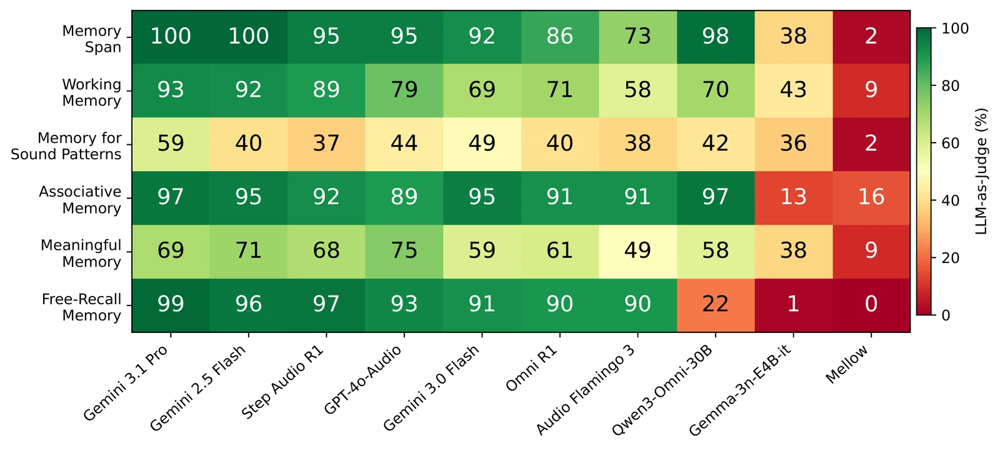
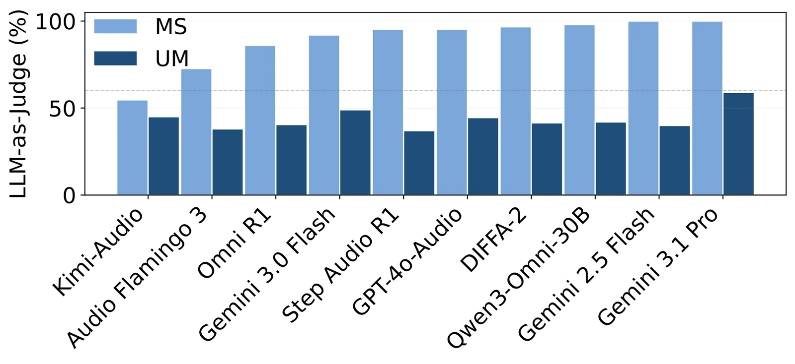
Processing Efficiency
Efficiency only matters relative to success, so RAIL scores it with B-AUC, the area under the accuracy curve up to a reasoning-token budget:
Models allocate reasoning budget very differently
Accuracy is only weakly correlated with reasoning length. Gemini 3.1 Pro reaches the highest accuracy (0.953) with longer but consistent responses (std = 2.90). Kimi-Audio reaches comparable accuracy with much shorter outputs, a better trade-off. GLM-4-Voice and Gemma-3n-E4B-it vary more across tasks (Gemma std = 7.87) without being more effective.
Model size does not determine efficiency
For 21 open-source models (167M–33.5B), B-AUC shows no clear relation to size. Models of 8.4–8.6B range from 0.2 to 0.7. Small or weakly instruction-tuned models often produce repetitive or unconstrained output, and large ones may reason verbosely. Gemma-3n-E4B beats Gemma-3n-E2B (47.92 vs. 24.49) despite the same architecture.
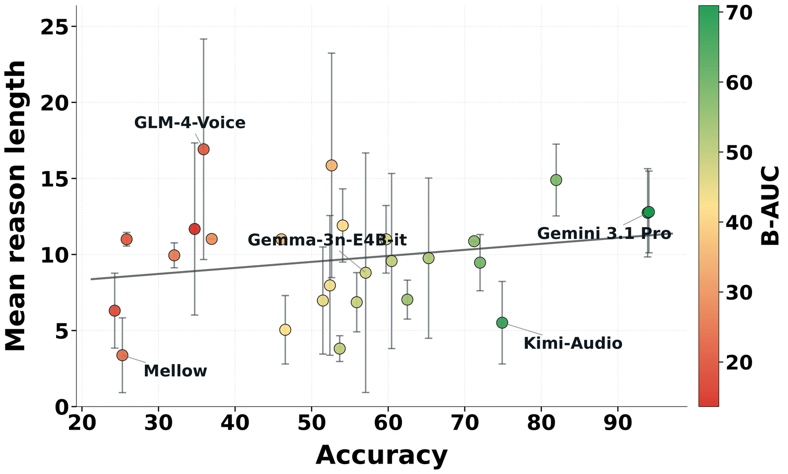
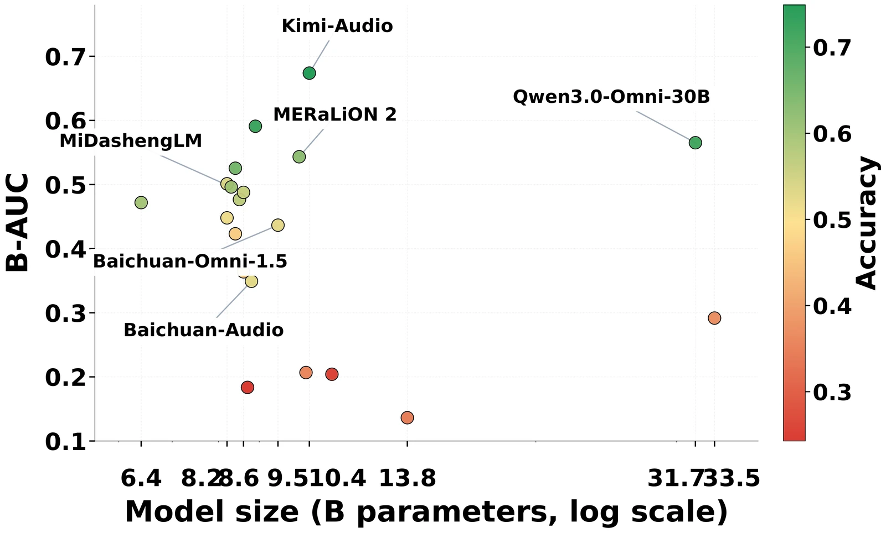
Acquired Knowledge
Machine-sound knowledge is the outlier
Six of the seven knowledge tasks behave alike: wide score ranges, top scores of 0.78–0.92, and high mutual correlation (Pearson r = 0.68–0.97). Mechanical Knowledge (MK) is tightly clustered at 0.23–0.48, near chance (0.33) even for Gemini 3.1 Pro (0.45), and weakly or negatively correlated with the other tasks (r = −0.30 to 0.09). It requires fine discrimination between acoustically similar machine sounds, an underrepresented and perceptually demanding domain. Gemma-3n-E4B scores 0.97 on it but underperforms elsewhere, which points to dataset-specific exposure.
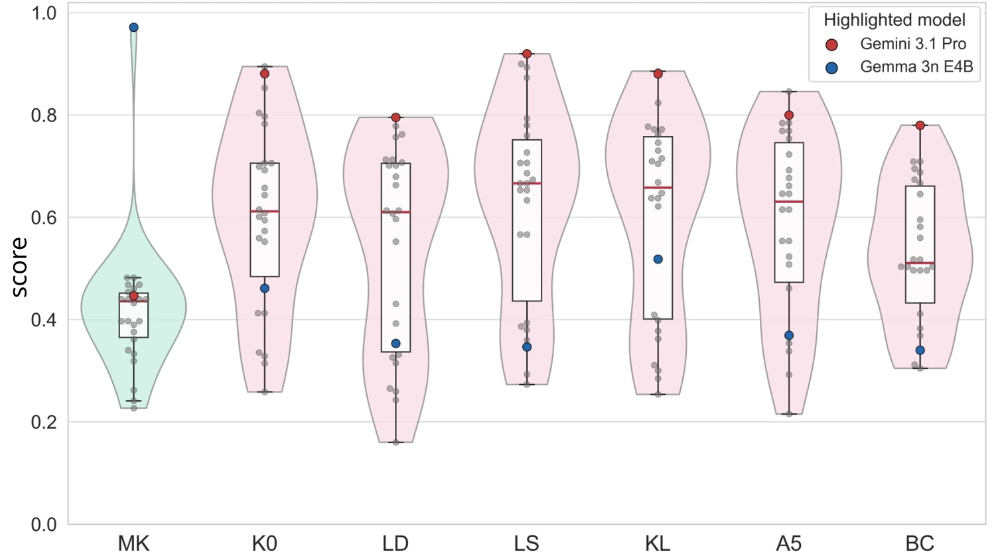
Toward human-aligned auditory intelligence
Training paradigms inherited from text-based LLMs, centered on task supervision, CoT reasoning and short audio dialogues, do not yet support generalizable auditory understanding. Progress needs a shift in both evaluation and training: rather than optimizing for tasks or audio domains, future work should target auditory capabilities that are structured, adaptive and grounded in sensory input.
Audio-centric perception
Encoders and front-ends that preserve fine acoustic detail, so perception does not hinge on language cues.
Stateful, reusable reasoning
Reasoning that updates an explicit state over time and transfers across tasks and modalities.
Long, non-speech memory
Training and evaluation for long-term, non-speech and multi-turn auditory memory.
Efficiency-aware objectives
Objectives that reward correct answers reached with reasoning depth matched to the input.
BibTeX
@inproceedings{jin2026rail,
title = {RAIL: Rethinking Auditory Intelligence in Large Audio-Language Models
with a CHC-Grounded Benchmark},
author = {Jin, Hongyu and Wang, Siyi and Xiao, Yang and Dong, Jiaheng and
Tan, Shihong and Peng, Kaiyuan and Juravle, Georgiana and Chen, Shanquan and
Huang, Gongping and Jia, Hong and Holden, Eun-Jung and Bailey, James and
Dang, Ting},
booktitle = {Advances in Neural Information Processing Systems (NeurIPS)},
year = {2026},
url = {https://arxiv.org/abs/2606.11260}
}